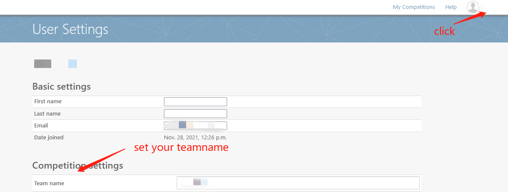
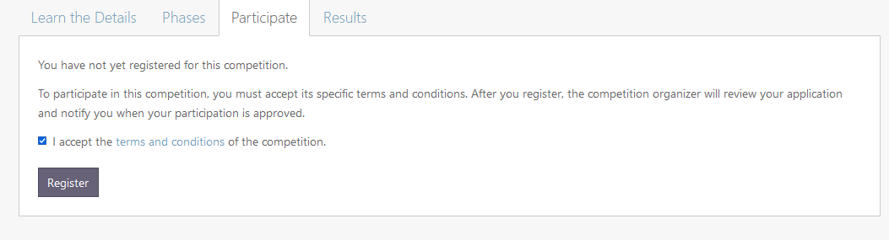
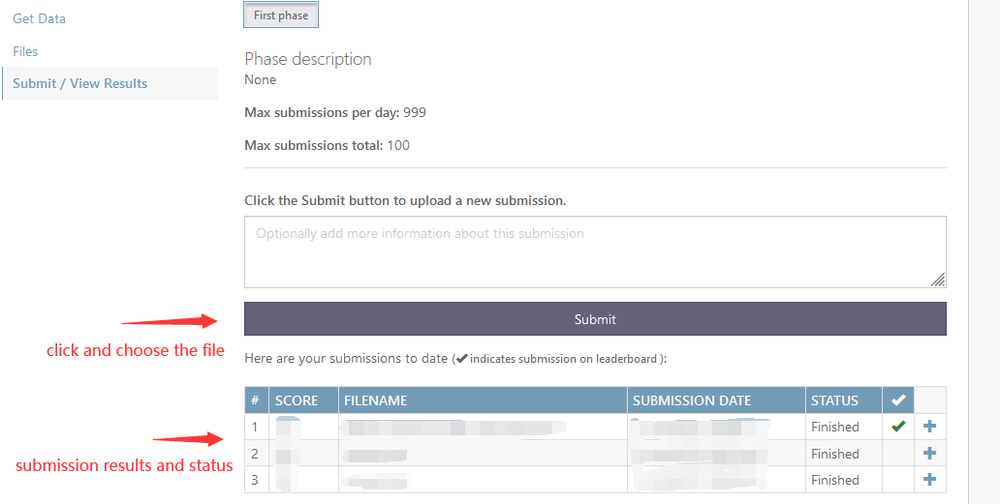

Note: make sure to use the same e-mail address and teamname in the MISP2025 and codalab, or you may not be allowed to submit the results in the competition. If you'd like to change e-mail address, please contact with organizers.

Tips: just check the box ( you don't need to download the term as you have signed it when you register on MISP2025 competition ), and we'll permit access that night.

Make sure your submitted zip file as following directory structure:
|summission.zip
||--summission.txt
Make sure each row of the transcript in the following format, which is a key-word separated by a space character:
segment_id 文字文字文字 （only Chinese characters included in the text part without any punctuation）
The segment id is named as follows:
< Speakers ID >_< Session ID >_< Speakers IDs >_F8N_< Start time >-< end time >
Here are the submission example for the evaluation set. Notice: The number of segments in ground truth is smaller than those directly extracted from the transcript(.textgrid files), since some of the segments labeled in .textgrid files lack relevant audio or video segments for early shutdown of recording devices in the recording process.
When the "Status" in the submission table turns to "Finished", you can refresh the page the check the score below. You can also click the button named “View scoring output log” to check if you miss any segments in your submission, for example:
cpCER: 71.11

Make sure a. your submitted transcript, includes all segments in the evaluation set. b. your submission files are in required format, or the submission will fail.
For each submitted score, it will be directly on the leader board if it's your best score so far.
During the evaluation set phase, every group is allowed to 5 times per day.
If you meet any problems during submission, please contact with us by e-mail at mispchallenge@gmail.com.